Using YubiKeys with EJBCA
Most secure installations will contain administrator login keys on an external token rather than storing them as soft key stores on the local machine.
The following describes how to install and get going with Yubico's YubiKey. For more information on Yubico, see www.yubico.com.
Prerequisites
To get going, you need to have the following installed on your workstation:
The OpenSC PKCS#11 implementation, see OpenSC.
The YubiKey Manager, either YubiKey Manager UI or Yubikey Manager CLI.
A compatible browser, Firefox or Chrome is recommended.
Follow the steps below to get started using your YubiKey with EJBCA. The instructions use Firefox and YubiKey Manager on macOS.
Step 1: Create Key Pair on YubiKey
To create a key pair on your
YubiKey on macOS, do the following:
Start up the YubiKey Manager.
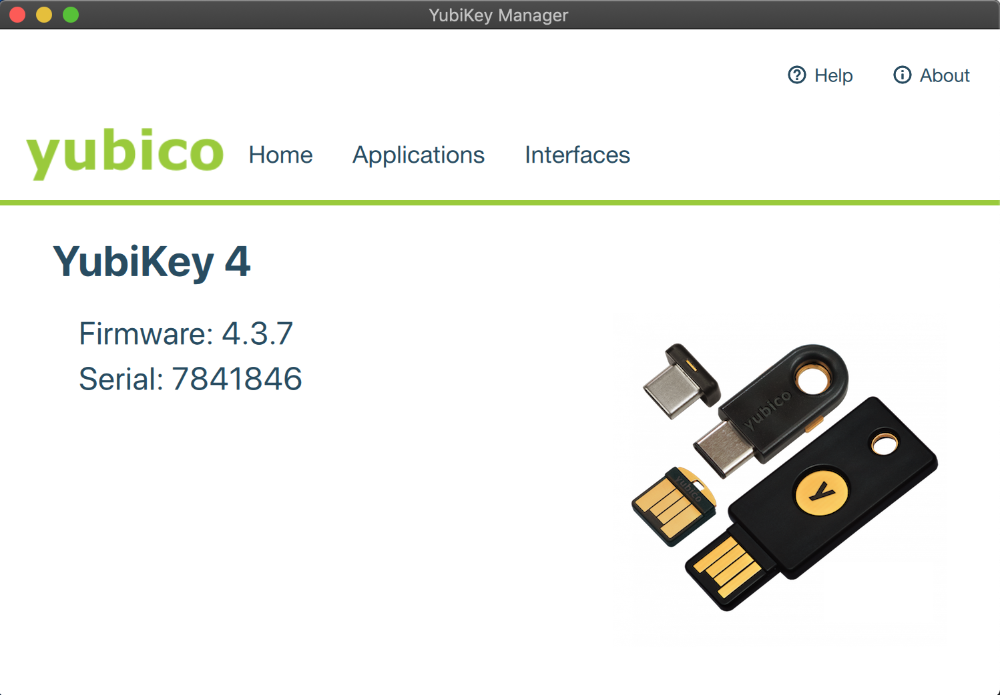
Select Applications > PIV and click Configure Certificates.
On the Authentication tab, click Generate to create a new key pair on the token.
Select Certificate Signing Request (CSR) and click Next.
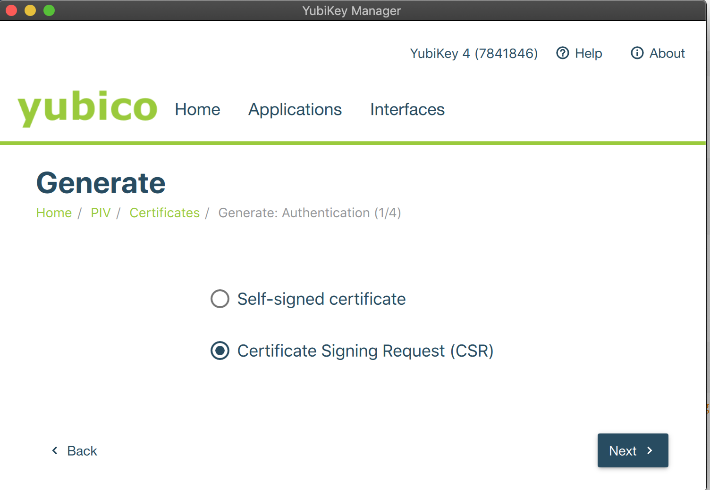
Complete the wizard by specifying a key algorithm, key size, and setting the Common Name for your token.
Finally, click Generate to retrieve a CSR that you can use to enroll the key pair to EJBCA.
The default PIN is 123456, refer to the YubiKey PIN Introduction documentation.
Step 2: Enroll the YubiKey to EJBCA
Note that prerequisites for enrolling the YubiKey to EJBCA are that EJBCA is configured with the appropriate profiles to issue client certificates, and you have an authentication certificate to log in to EJBCA as an RA Admin to issue certificates.
To enroll the newly created key pair using the EJBCA RA UI, do the following:
In EJBCA, click RA Web to go to the EJBCA RA UI.
Click Enroll, select the appropriate certificate type and sub-type, and then click Generated by User to upload your CSR generated in step 1.
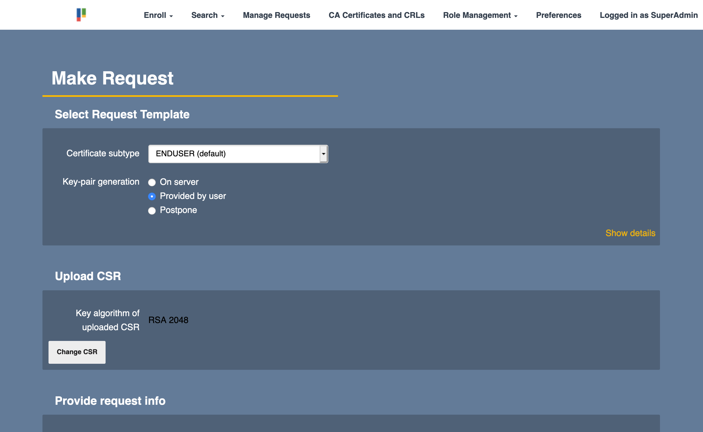
Specify any relevant information and click Download PEM to save the file.
Step 3: Import Certificate to YubiKey
To import the certificate to the YubiKey on macOS, do the following
Open the YubiKey Manager , s elect Applications > PIV and click Configure Certificates.
Click Import and select the new newly generated certificate.
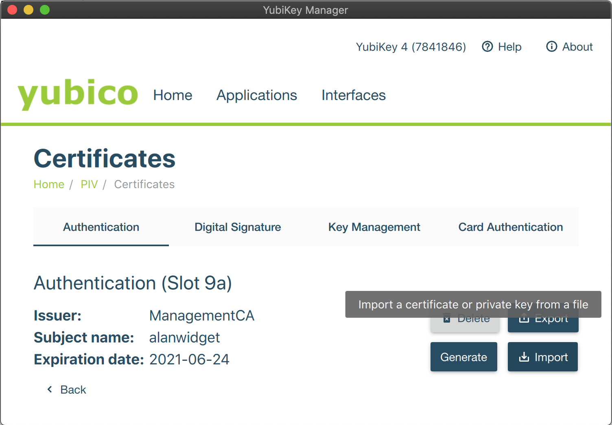The certificate details are displayed on the Authentication tab and YubiKey is now up and running.
Step 4: Configure Firefox to use YubiKey
(see notes below to configure Chromium)
To configure Firefox to use YubiKey, do the following:
Open Firefox and enter about:preferences in the address bar.
Click Privacy & Security and then click Security devices
Click Load to install OpenSC's PKCS#11 Driver.
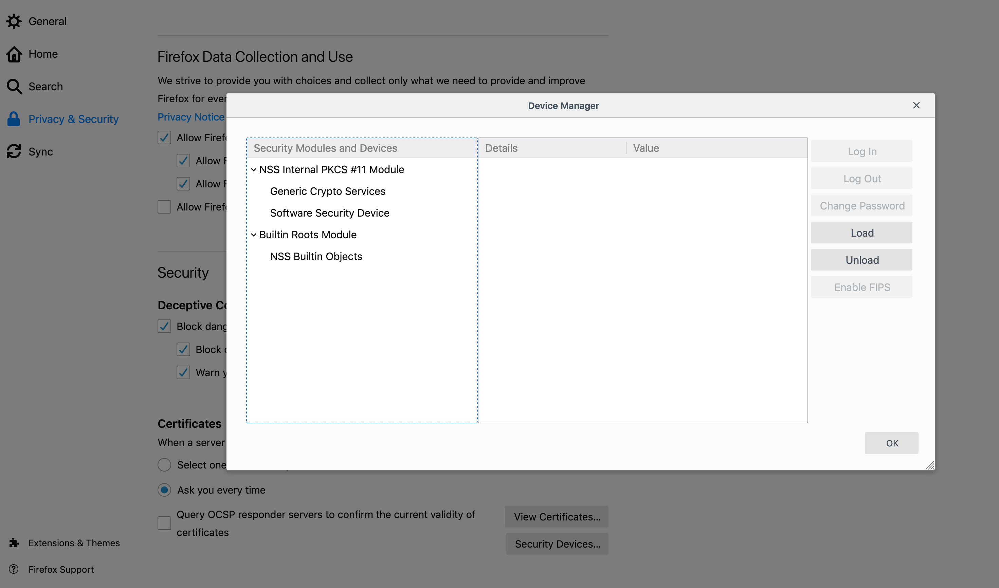Change the Module name and click Browse to locate the opensc-pkcs11.so (or similar) library.
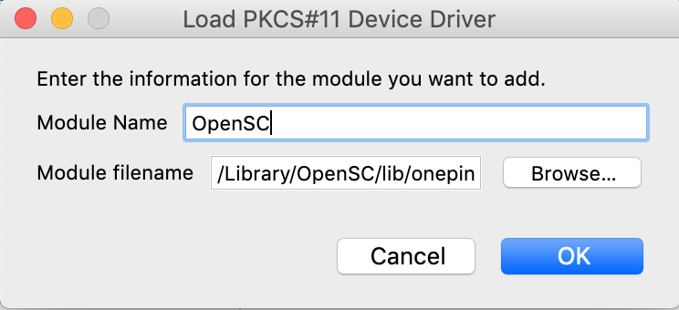Verify that YubiKey is shown as a new security module and click OK to close the Device Manager.
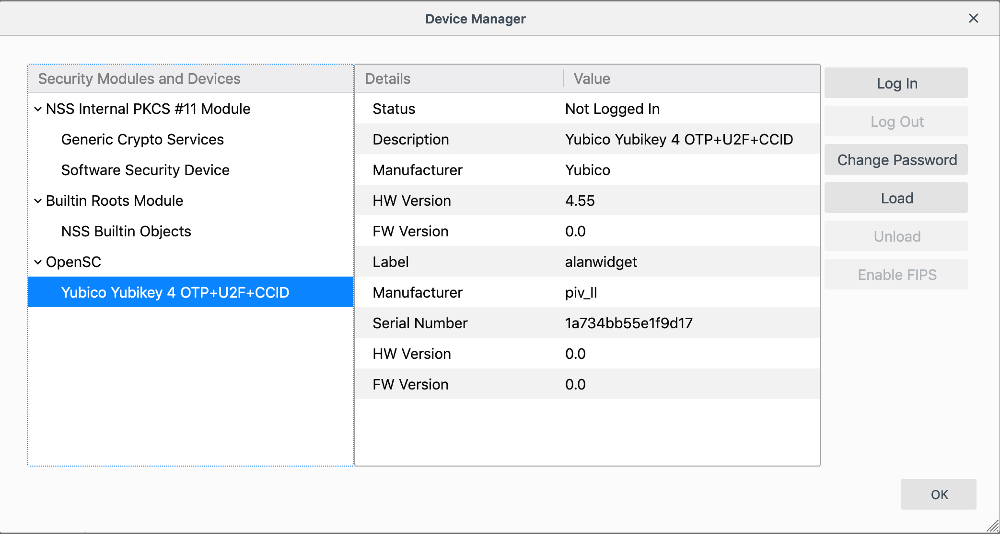
Step 5: Configure Access Rights in EJBCA
To configure access rights in EJBCA using Roles, do the following:
In the EJBCA CA UI, click Roles and either create a new role or add the new administrator to an existing role.
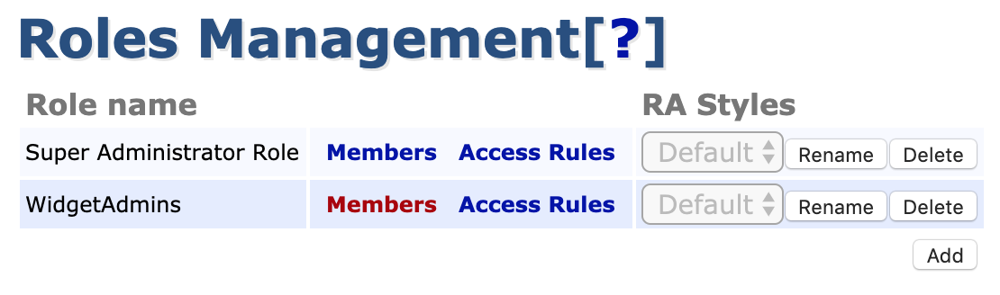To add the administrator to an existing role, click Members, select the appropriate CA and enter information identifying the certificate, preferably the serial number.
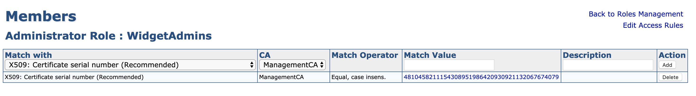To find the serial number, view the certificate in OpenSSL using the following command:
$ openssl x509 -inalanwidget.pem -text -nooutThe serial number can be copied, converted from hex to decimal using a converter, and then used in EJBCA.
Finally, click Access Rules and set the required rules for your administrator.
The next time you start a new session, your YubiKey is offered as an option for identification:
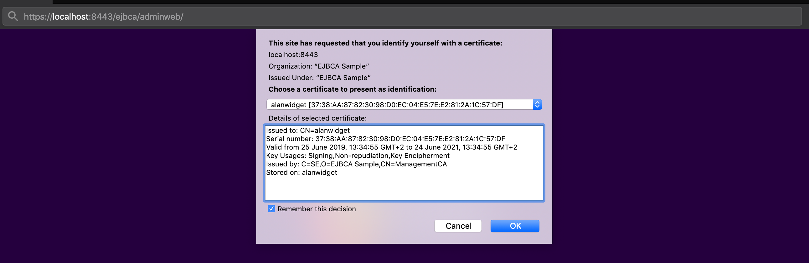
Additional Notes
Configuring OpenSC PKCS#11 in Chrome
To add the OpenSC PKCS#11 module to Chrome or Chromium:
Shut down Chrome.
Make sure libnss-tools are installed. For example, on Ubuntu:
sudo apt install libnss3-toolsInstall OpenSC as a module in NSS:
modutil -dbdir sql:$HOME/.pki/nssdb/ -add"OpenSC"-libfile /usr/lib/x86_64-linux-gnu/opensc-pkcs11.soCheck that the module was installed:
modutil -dbdir sql:$HOME/.pki/nssdb/ -listOpen EJBCA Admin UI in Chrome and enter your PIN when prompted.
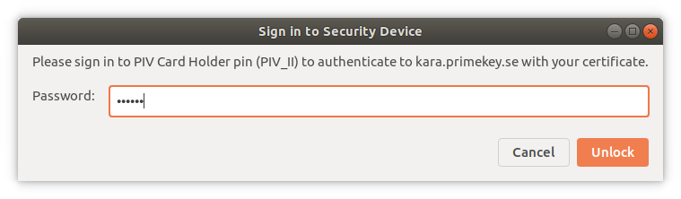 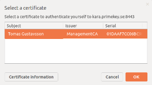